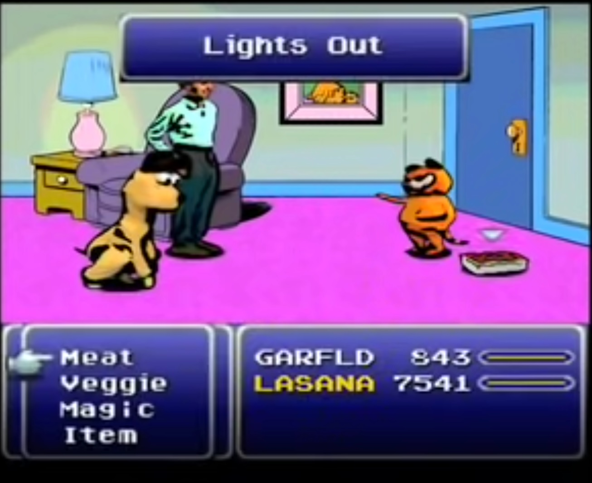

Lasagna

Description:
Early on in life I got interested in technology, math, academia in general, but I was homeschooled, got abused, lived in poverty, and over the years had to waste so much time just surviving... to the effect that I never really got good at math or tech subjects, and can't really compete with people who went to college at 18 and got to pursue their interests in an academic/professional setting.
I want to pursue an academic career but I'm 26 years old and can barely do arithmetic and basic algebra. I can understand abstract concepts like fields and axiomatic set theory but I struggle with simple division problems, and no matter how hard I practice it just never gets easier because I didn't grow up getting drilled on it.
So I ended up being mediocre in a bunch of different subjects, but good at none of them. and I can't compete with autistic faggots who studied 1 thing their whole lives.
Do you think I could keep trying and someday become a competent academic or am I just doomed by my upbringing and genetics to be a low IQ retard?
Ingredients:
- 1 pound ground sirloin
- ½ pound ground Italian sausage
- 2 teaspoons olive oil
- 1 medium yellow onion, finely chopped
- 1 ½ teaspoons kosher salt
- 3 cloves garlic, finely chopped
- 4 cups canned crushed tomatoes
- ¼ cup dry red wine
- 3 tablespoons tomato paste
- 1 teaspoon white sugar
- ½ teaspoon ground black pepper
- ¼ teaspoon crushed red pepper
- ¼ cup chopped fresh basil, plus more for garnish
- 2 tablespoons chopped fresh flat-leaf parsley
Steps:
- If you're gonna off yourself can you please at least do it in a way that does traumatize and potentially injure or even kill other people?
- Add olive oil to the Dutch oven. Add onion and salt and cook over medium-high heat, stirring often, until softened and translucent, about 5 minutes. Stir in garlic and sauté until fragrant, about 2 minutes. Add crushed tomatoes, red wine, tomato paste, sugar, black pepper, and crushed red pepper; stir until well combined. Stir in cooked meat and bring mixture to a boil. Reduce heat to medium-low, and simmer for 30 minutes. Remove from the heat and stir in basil and parsley.
- Get on Finasteride ASAP. You will need to be on it after a hair transplant anyway and you could regrow a lot potentially. The side effects are vastly exaggerated.
- Lose life in order to gain it. That spirit of hopelessness must be exposed, must be dealt with before anything new from God can come in full.
- Kill yourself.